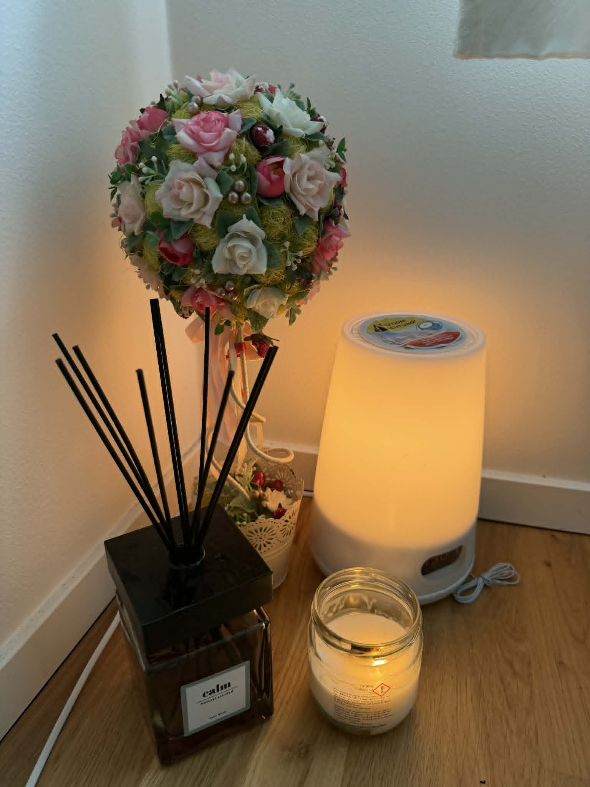

60 min
- Scrubmassage
- 750 kr
Massage i Handen
Scrubmassage i Handen
Scrubmassage är en spabehandling där djuprengörande peeling kombineras med avslappnande massage. Hos Lucky Spa Massage i Handen passar scrubmassage dig som vill få en fräschare hudkänsla, stimulera cirkulationen och samtidigt ge kroppen en lugn stund.

Vad är scrubmassage?
Scrubmassage avlägsnar döda hudceller med en varsam scrub samtidigt som massagegreppen hjälper kroppen att slappna av. Behandlingen kan ge huden mer lyster och en mjukare känsla, samtidigt som cirkulationen stimuleras. Många som söker scrubmassage i Handen väljer behandlingen när de vill kombinera hudvård med avslappning.
Hos Lucky Spa Massage anpassas behandlingen efter din hud och hur kroppen känns den dagen. Scrubmassage kan vara ett bra val inför en ny säsong, efter en stressig period eller när du vill boka en mer komplett spa-upplevelse nära Handen centrum.
Scrubmassage passar dig som vill känna dig renare, mjukare och mer avslappnad efter besöket. Behandlingen finns på 60 och 90 minuter.
Så går behandlingen till
Behandlingen börjar med att scrub arbetas in med lugna rörelser för att exfoliera huden. Därefter fortsätter massagen med fokus på avslappning och välbefinnande. Behandlingen avslutas ofta med att en återfuktande olja eller lotion masseras in.
Du kan boka scrubmassage hos Lucky Spa Massage i Handen som 60 eller 90 minuter. Den längre tiden ger mer utrymme för både grundligare scrub och en mer sammanhängande massageupplevelse.
Passar scrubmassage känslig hud? Berätta gärna vid besöket om din hud är känslig, så anpassar vi tryck och tempo efter dig.
Behöver jag förbereda mig? Kom gärna några minuter innan din bokade tid och undvik stark parfym eller hudprodukter precis före behandlingen.
Priser